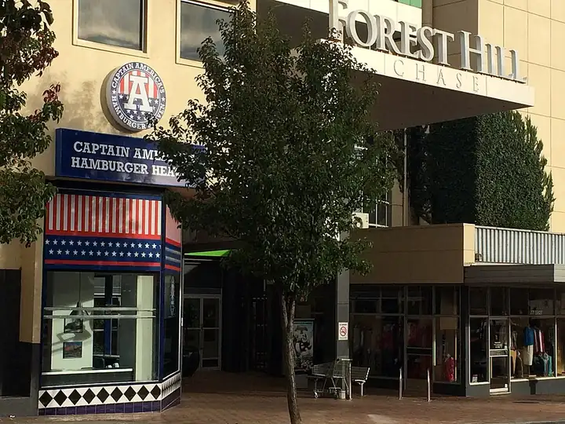

Forest Hill Chase
Forest Hill Chase is a shopping centre in Forest Hill, in the Whitehorse City Council area, handy for a rainy day or a quick stop. Forest Hill SC/Canterbury Rd (bus) is a 6-minute walk away and the nearest public toilet is about 587 m away with a baby change table. Opening hours: Monday - Wednesday: 9:00am - 5:30pm; Thursday - Friday: 9:00am - 9:00pm; Saturday: 9:00am - 5:00pm; Sunday: 10:00am - 5:00pm.


Quick facts
- Address
- 270 Canterbury Road, Forest Hill, VIC 3131
- Phone
- +61 3 9878 7111
- Toilets
- 587 m away, baby change, accessible
- Wheelchair access
- Yes
- Public transport
- Forest Hill SC/Canterbury Rd, bus (routes 703, 735, 736), 6 min walk
Details
- Opening hours
- Monday - Wednesday: 9:00am - 5:30pm; Thursday - Friday: 9:00am - 9:00pm; Saturday: 9:00am - 5:00pm; Sunday: 10:00am - 5:00pm (Venue website)
- Toilets
- yes (OpenStreetMap)
- Wheelchair access
- yes (OpenStreetMap)
- Phone
- +61 3 9878 7111 (OpenStreetMap)
- Address
- 270 Canterbury Road, Forest Hill, VIC 3131 (OpenStreetMap)
Questions parents ask
- Where is Forest Hill Chase?
- Forest Hill Chase is in Forest Hill, Victoria, at 270 Canterbury Road, Forest Hill, VIC 3131.
- Are there toilets at Forest Hill Chase?
- The nearest public toilet is about 587 m away, with a baby change table.
- How do I get to Forest Hill Chase by public transport?
- The closest stop is Forest Hill SC/Canterbury Rd (routes 703, 735, 736), a 6-minute walk.
- What is the phone number for Forest Hill Chase?
- Call Forest Hill Chase on +61 3 9878 7111.
- Is Forest Hill Chase wheelchair accessible?
- Yes, it is wheelchair accessible.
Nearby places
- The Coffee Club
Cafe or restaurant · Forest HillBus 5 min walk
- Lollipops Playland
Playground · Forest HillFreeBus 5 min walk
- Subway
Cafe or restaurant · Forest HillBus 5 min walk
- Anjaya Court Reserve
Park · BlackburnFreeBus 3 min walk
- Glen Valley Reserve
Park · Forest HillFreeBus 4 min walk
- Playground at Jean-Lake Reserve
Playground · Forest HillFreeBus 3 min walk
- Brand Smart Outlet Mall
Shopping centre · NunawadingToilet nearbyBus 4 min walk